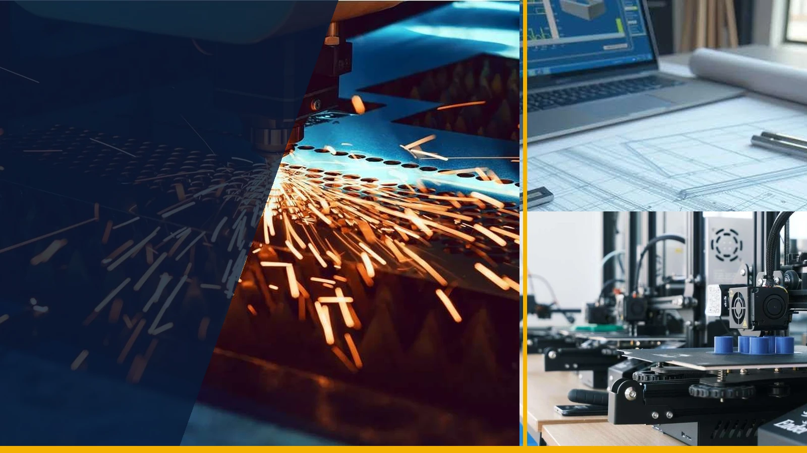
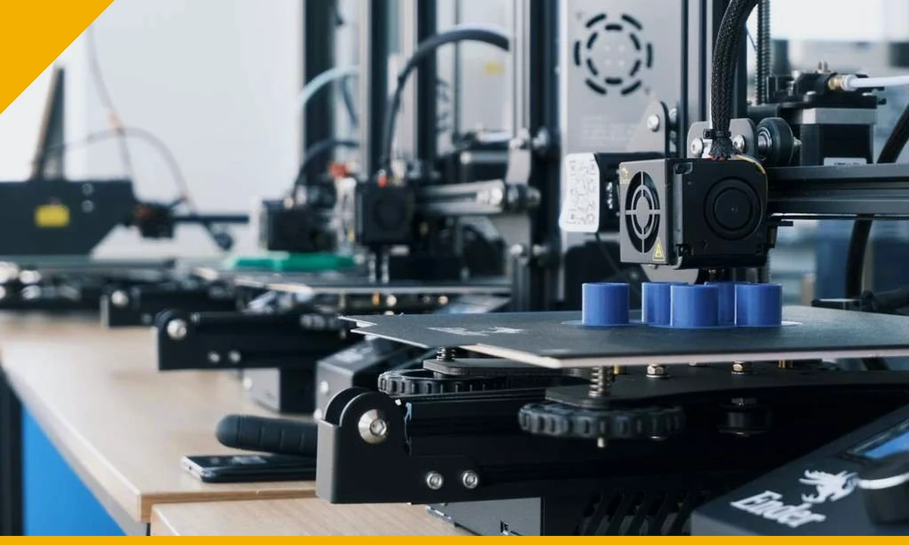
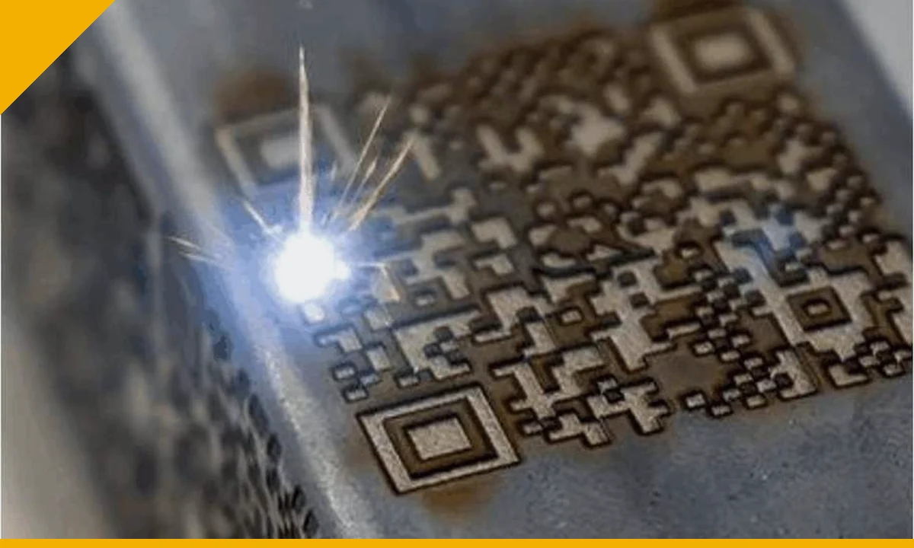
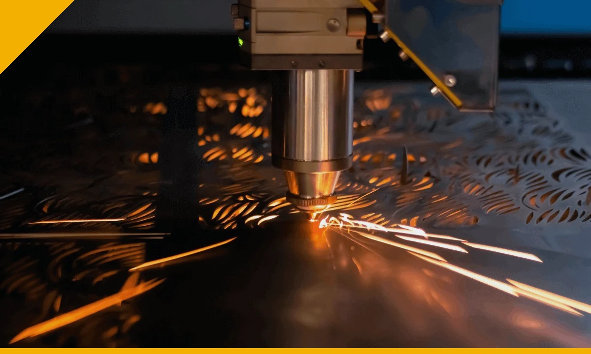
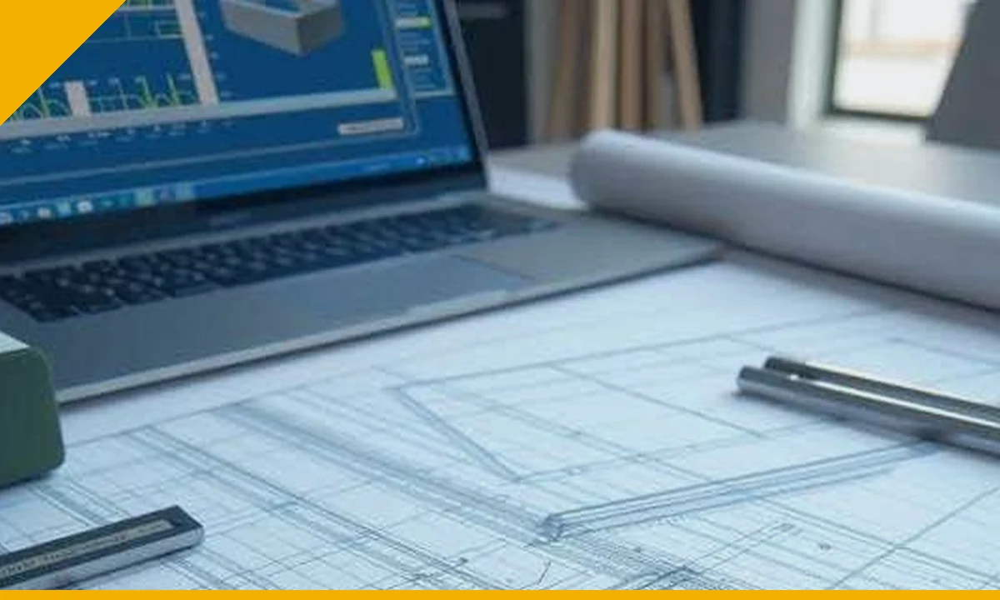
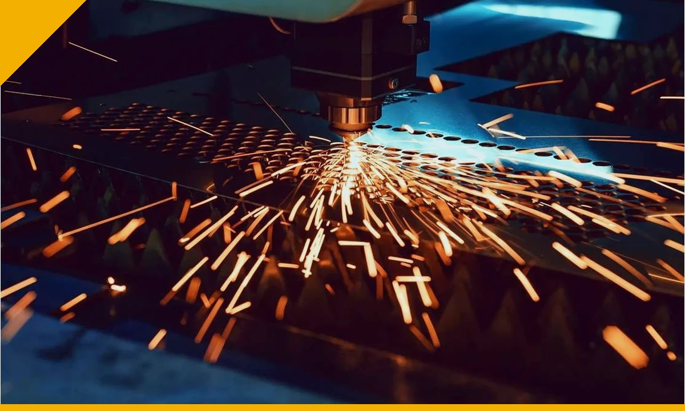
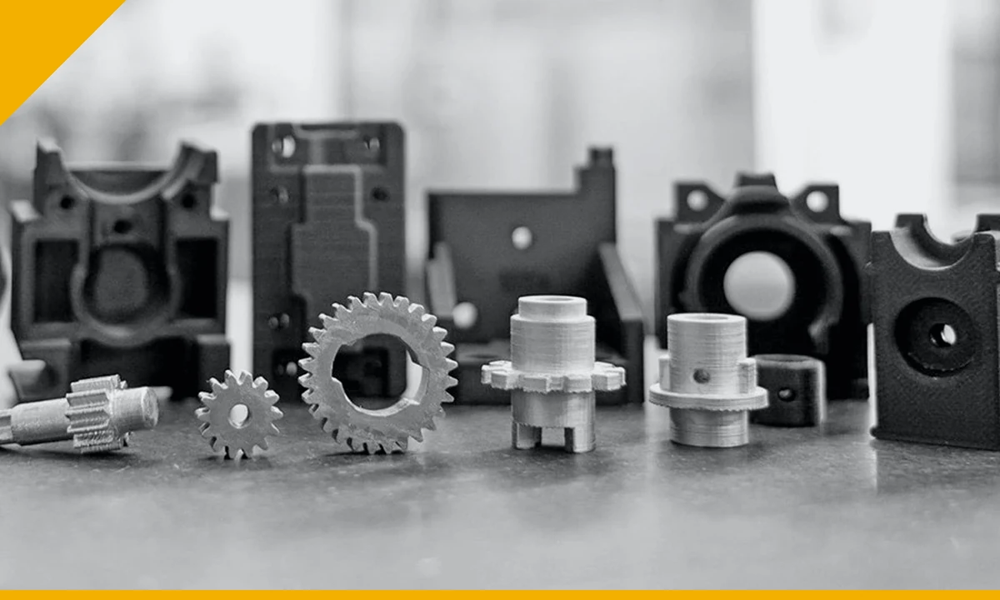

ENGINEERING.
MANUFACTURING.
INDUSTRIAL SOLUTIONS.
From design and custom components to machine maintenance, automation, industrial spares, quality systems and business support — Crecer Grande helps manufacturing and engineering businesses solve practical industrial requirements.

One requirement. Multiple capabilities.
Crecer Grande brings engineering, manufacturing, products, maintenance, automation, quality, tenders and inspection under one practical industrial-support platform.

Advanced Manufacturing & Components
Laser cutting, laser welding, laser marking, 3D printing, fabrication, machining and custom industrial components.
EXPLORE →
Engineering & Design
Mechanical design, 3D CAD, manufacturing drawings, DFM, reverse engineering, BOM and technical documentation.
EXPLORE →
Industrial Products & Spares
Laser consumables, chiller parts, automation hardware, tooling, CNC/VMC parts and custom replacements.
EXPLORE →
Industrial Machine Maintenance
Breakdown support, preventive maintenance, troubleshooting and maintenance coordination for industrial machinery.
EXPLORE →
Automation Solutions
PLC, HMI, I/O, Industrial IoT, sensors, drives, panels, retrofit and connectivity support.
EXPLORE →
Quality, Certification & Compliance
ISO/QMS implementation, documentation, audit readiness, improvement and compliance coordination.
EXPLORE →
Tender & GeM Support
Tender discovery, eligibility review, compliance matrices, bid documentation and submission assistance.
EXPLORE →
Inspection & QA Support
Dimensional, visual and pre-dispatch inspection support, vendor quality, FAI and NCR/CAPA support.
EXPLORE →No drawing? That is not always a blocker.
We can begin from different levels of information and define what is still required before execution.
Drawing / CAD
2D drawing, STEP, STL, DXF or manufacturing specification.
Sample Component
Existing or damaged part for measurement, study and reverse engineering.
Photograph / Nameplate
Photos, machine nameplate or part markings for initial identification.
Requirement Only
Tell us what the component or machine needs to do and we can define the route.
Find the service closest to your requirement.
These V2.0 pages are built for buyers searching for a specific industrial service and provide the information needed to start an RFQ.

Laser Marking
QR, serial, Data Matrix, logo and permanent traceability marking.

3D Printing
FDM/FFF, resin prototypes and low-volume industrial parts.

Reverse Engineering
Existing component to measurements, CAD, drawing and replacement route.

Custom Machine Spares
Replacement and obsolete component development for maintenance needs.

Machine Maintenance
Breakdown response, diagnostics and preventive maintenance support.

Laser Cutting
SS, MS and aluminium sheet/plate components and profiles.
Consumables, spares and industrial products.
Model-dependent products are reviewed against the installed machine, specification or application before quotation.

Laser Cutting, Welding & Marking Components
Nozzles, protective glass, ceramic parts, holders and selected wear parts.
View details →
Sheet-Metal Bending Tooling
Press-brake punches, V-dies, segmented tooling and related forming components.
View details →PLC, I/O, Industrial IoT & Housings
PLCs, HMIs, I/O, gateways, sensors, controls and industrial housings.
View details →
Laser Chiller Pumps
Replacement pump sourcing matched by chiller, electrical and hydraulic duty.
View details →From first enquiry to practical execution.
The exact route depends on the job. We coordinate only the stages genuinely required.

Drawing, sample or issue
Understand the available input and the required outcome.

CAD / reverse engineering
Create or refine engineering information where required.

Validate where needed
Check fit, feasibility, prototype or critical requirements.

Make / source / process
Manufacture, fabricate, machine, print, mark or source.

Machine support
Support installation, troubleshooting or maintenance where scoped.

Verify requirement
Dimensional, visual or agreed quality checks.

Supply / support
Deliver the item, documentation or follow-up support.
SS304 QR identification plates
A real-world combination of laser cutting, variable marking and readability verification.

SS304 • 70 × 70 × 0.5 mm • 60 individual QR codes
Laser-cut plates with rounded corners, mounting holes, permanent company-name marking, 50 × 50 mm individual QR marking and readability verification.
Read the case study →Have an engineering or industrial requirement?
Send the drawing, sample, photograph, machine details or problem statement. We will identify the practical next step before quotation.